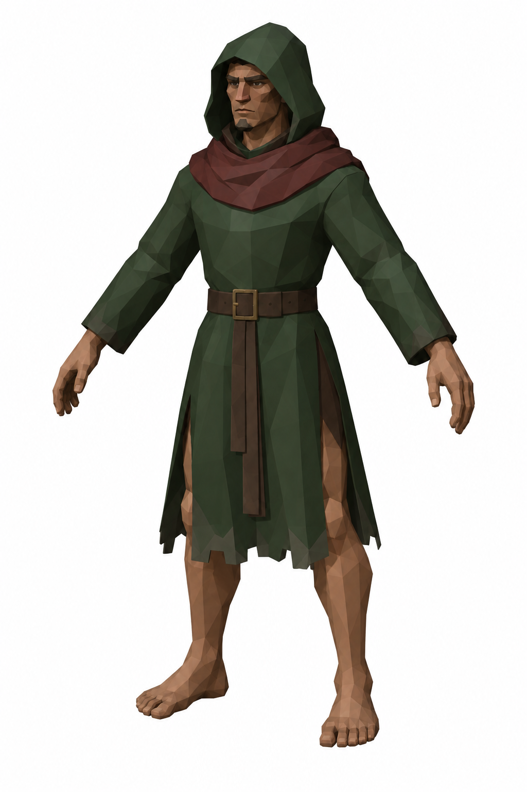
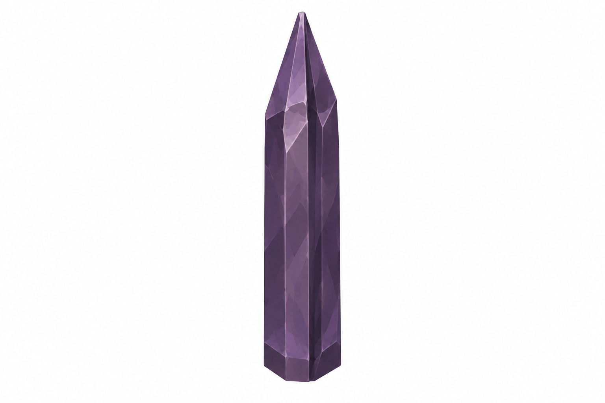
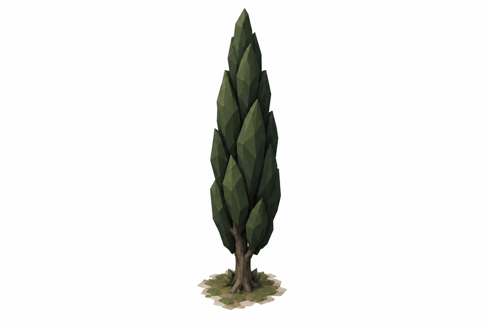

3 Ekim 2026 · 17 görev · Kullanıcı incelemesi için taslaklar. Her kartta ayrı parça görselleri, durum şemaları ve brief ölçüleri bulunur. Yeni taslaklar henüz onaylı değildir.
3 seçili yeni referans · Ölçüler ve revizyon notları
14 seçili yeni referans · Ölçüler ve revizyon notları

2 seçili yeni referans · Ölçüler ve revizyon notları
4 seçili yeni referans · Ölçüler ve revizyon notları

5 seçili yeni referans · Ölçüler ve revizyon notları
6 seçili yeni referans · Ölçüler ve revizyon notları
9 seçili yeni referans · Ölçüler ve revizyon notları

11 seçili yeni referans · Ölçüler ve revizyon notları